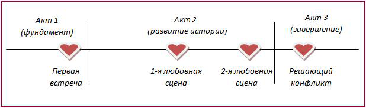
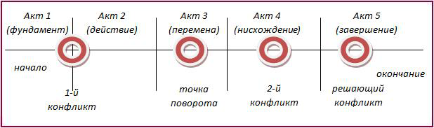
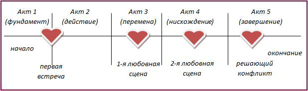

Структура Трех Актов
Примечателен тот факт, что данному предмету не придается большого значения в отечественной литературе, тогда как зарубежом, особенно в англоязычных странах, ни один курс по шлифованию писательского мастерства, ни один учебник по написанию современного художественного произведения, - не обходится без упоминания или даже детального разбора понятия Структура Трех Актов. В более «продвинутой» литературе рассматривается также тема Структура Пяти Актов. В этой статье я не буду сосредотачиваться на интересном вопросе «Почему?», а лишь расскажу в общих словах, что это такое и «с чем едят».
Еще Аристотель мудро заметил, что у каждой истории есть начало, середина и конец. Если какой-либо из этих составляющих нет, то нет и истории. Например, есть начало: «В Пельменево появился маньяк» и конец: «Его арестовали, идет следствие». Это может быть что угодно: сплетня на лавочке,сводка новостей, заметка в местной прессе, но никак не история. Еще менее удобоваримыми будут варианты «середина-конец», когда непонятно, кто, где и как все начиналось, и «начало-середина» - без логического завершения. На основании данного утверждения и построенаСтруктура Трех Актов.
Предназначена она для анализа современной художественной литературы, а также для усовершенствования процесса коммуникации между автором и издательством. В общем-то, все достаточно просто. Первый Акт — Начало, занимает 25% произведения. Второй — Середина — 50%. И последняя четверть приходится на Окончание.
Акт 1. Время и место действия, главные герои, закрутка сюжета/интриги. К концу акта происходитпервый конфликт, который меняет направление истории. Например, в «Матрице» главный персонаж узнает о том, что у него исключительные способности и ему предстоит спасти человечество. В любовных романах, Он и Она впервые встречаются, и жизнь как минимум одного из них летит кувырком. Примеры можно приводить до бесконечности, ведь даже не знакомые с данной теорией авторы «замешивают тесто» в начале произведения. Здесь же читатель получает возможность узнать о внутренних конфликтах главных персонажей, которые будут играть определяющую роль в развитии сюжета, и в последствии автор не забудет разрешить хотя бы некоторые из них.
"Хвосты» - не единственная опасность, подстерегающая писателя. Желание создать блестящий первый акт может привести к тому, что тот затянется на половину произведения и больше, оставляя недостаточно пространства на развитие истории и, что часто бывает,безжалостно комкая конец. Сомнений нет, завершить роман можно и одним предложением: «Богиня Удачи спустилась с небес и помирила всех героев.» Но есть ли это хорошо? Почему-то кажется, что читатель будет плеваться от злости и никогда больше не потратит ни время, ни деньги на книги писателя, который, по сути, его надурил. Дал обещание определенного морального удовлетворения — и забыл его выполнить. О релевантности мы поговорим в одной из будущих тем.
Акт 2. Середина и, собственно, развитие истории. Здесь, согласно изученным мной источникам, писателю важно не «скатиться» до однообразия. Ведь даже если нашпиговать середину (а в крупном произведении это не одна сотня листов) самыми интересными фактами, рано или поздно все они будут иметь одинаковый, со временем слабеющий, эмоциональный эффект на читателя. Чтобы этого не произошло, разработаны определенные методы в помощь автору.
Во-первых, по ходу развития событий, заданных первым конфликтом в Акте 1, главному герою/героям нужно преодолевать ряд мелких препятствий и недоразумений. Читать о том, что «все хорошо» и как замечательно герои справляются с проблемой, - скучно. А вот если по ходу действий их постоянно что-нибудь «отбрасывает назад», - это уже совсем другое дело.
Во-вторых, под конец первой половины Акта 2 происходит второй конфликт. Он должен быть серьезнее первого (не забываем, что волнение читателя должно развиваться по нарастающей). Р. Ингерман советует сделать так, чтобы второй конфликт возник из-за действий героев, которые вместо того, чтобы разрешить первый конфликт, создают еще большие проблемы. Но это — не правило. Второй конфликт может произойти по любым как внешним, так и внутренним причинам, главное — чтобы ему было место в данной истории и впоследствии он был разрешен.
В-третьих, под конец Акта 2 происходит третий конфликт. Стоит ли говорить, что он должен быть еще более волнительным, чем предыдущие? Отличие третьего конфликта в том, что он должен вести к развязке и Акту 3. То есть должно произойти что-то такое, что подтолкнет героя(ев) к решениям или действиям, которые приведут к завершению истории. Например, в случае с межгалактической войной, в зависимости от желаемого писателем конца, герой и его команда могут победить (и определенный результат будет описан в Акте 3) или проиграть (и, допустим, потерпеть крушение на неизвестной планете, где их колония положит начало новой цивилизации). Сколько раз мы видели в любовных фильмах, что героиня едет одна в аэропорт и у героя остаются считанные минуты, чтобы не потерять ее навсегда? Третий конфликт должен быть определяющим, после него — «или пан, или пропал».
Акт 3 - или конец, есть логическое завершение истории и подтягивание всех «хвостов». Астронавты понимают, что не смогут выбраться с новой планеты (корабль не подлежит ремонту и помощи ждать неоткуда), и разбивают лагерь. А влюбленный герой настигает даму сердца в аэропорту и они целуются; апплодисменты толпы, занавес.
Это не жесткая структура, и автора никто не заставляет ей следовать. Но она работает, что подтверждается рядом бестселлеров. Она хорошо воспринимается читателем, и понятна издателям. Авторам предлагается адаптировать структуру под избранный жанр и собственную задумку, но многие вполне успешно работают в ее рамках, без изменений. Для иллюстрации адаптации Структуры Трех Актов под жанр, предлагается следующее ее использование в любовных романах:

Cтруктуру Пяти Актов
Cтруктуру Пяти Актов изучил и предложил Густав Фрейтаг, известный драматург и романист. Отличие от Структуры Трех Актов состоит в том, что развитие истории (Акт 2 в СТА) разбито на три самостоятельных акта, включающих в себя развитие действия, точку поворота и «ниспадающее» действие. Проиллюстрировать это можно следующим образом:

Акт 1. Время и место действия, знакомство с главными героями, внутренние и внешние проблемы, сюжет и основная интрига (желательно, не включать дополнительные ветки на данном этапе). Под конец — первый конфликт (см. Структура Трех Актов).
Акт 2. Действие по восходящей. Положительные сдвиги в истории (например, герои влюбляются в друг друга, оказываются в экзотическом месте и т.д.). Второстепенные ветки сюжета, дополнительные герои.
Акт 3. Точка поворота или перемены в истории. Второстепенные конфликты начинаются и разрешаются. Дополнительная интрига.
Акт 4. Действие по нисходящей. Конфронтация и разрешение второстепенных проблем, подготовка к основному конфликту в главной ветке сюжета. Второй конфликт в главной ветке сюжета, подготавливающий к завершению.
Акт 5. Окончание. Разрешение всех оставшихся второстепенных проблем, касающихся дополнительных персонажей. Включает в себя Решающий конфликт между главными героями, который тоже в итоге разрешается. Подтягивание «хвостов» в истории.
Структура Пяти Актов позволяет «поддержать» наличие большего количества дополнительных героев и второстепенные ветки сюжета. Благодаря этому подходит для создания более объемных и сложных работ. Так же, как и Структуру Трех Актов,ее легко видоизменить под разные жанры и индивидуальные нужды писателя. Для любовных романов СПА будет выглядеть так:

Ссылки на дополнительные ресурсы (на англ. языке): http://en.wikipedia.org/wiki/Dramatic_structurehttp://members.cox.net/wcgrnway/exchange/dfictech_06.htm
Использованные материалы:
К. Крэйг и Ф. Хьюс «Полный путеводитель для написания любовного романа» (2008)
М. Рос «Молчаливый соратник писателя фикшн» (1992)
Р. Ингермансон и П. Экономи «Написание фикшн для чайников» (2009)
Источник: http://avtoram.blog.ru/85834051.html